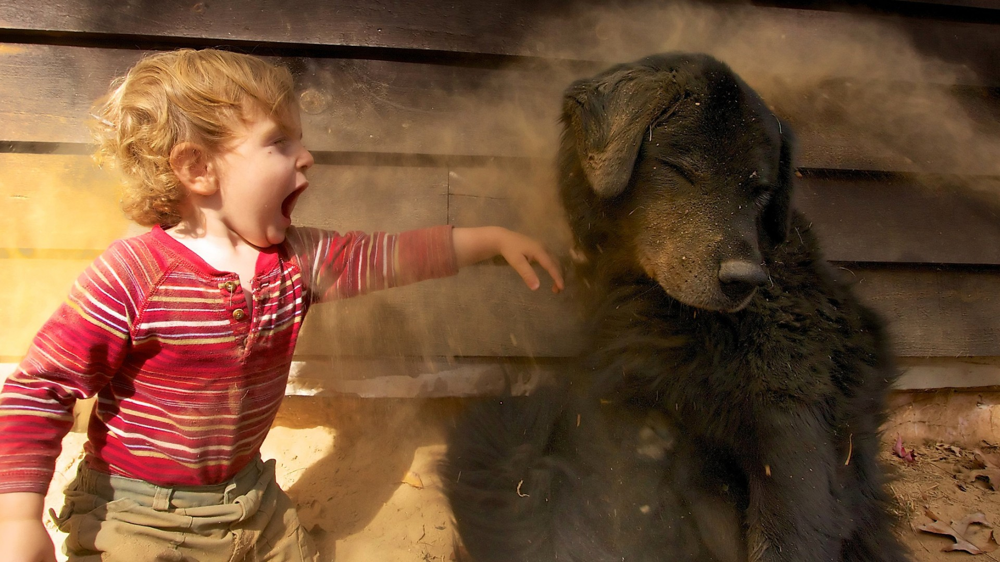
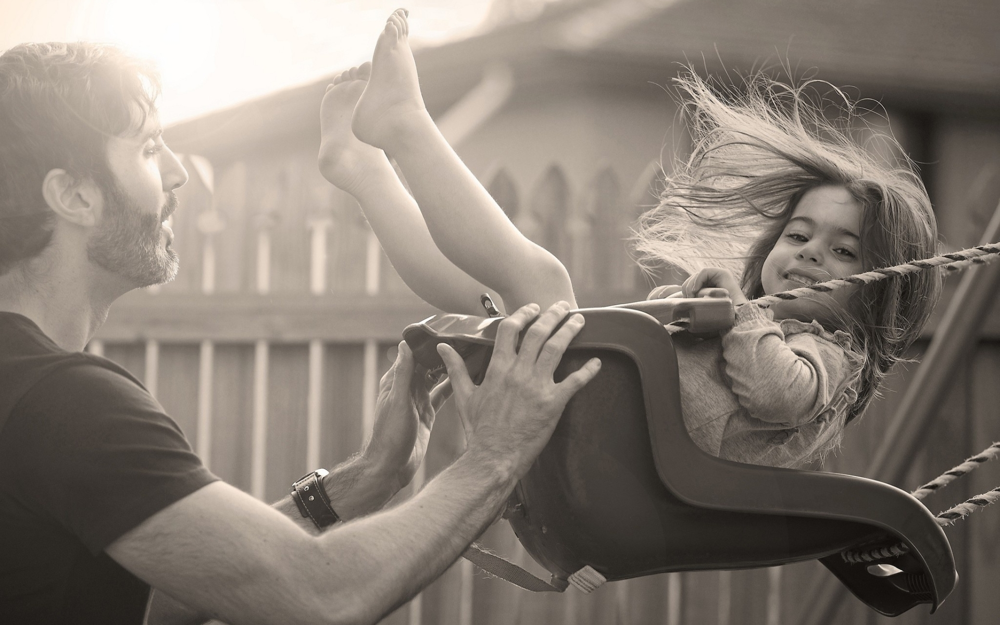
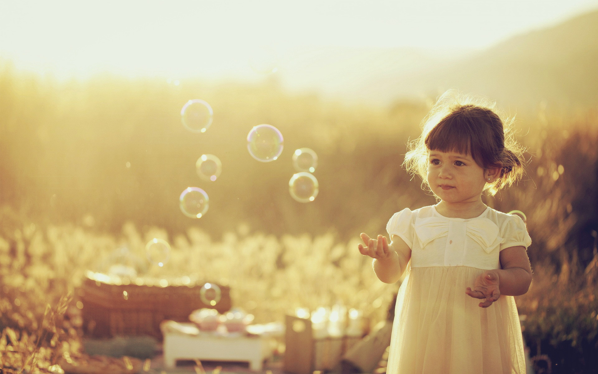

Як фотографувати дітей

Загальну кількість фотографій, не залежно від жанру, можна розділити на хороші і погані. Складові цих понять різні, але є й такі, які однакові для всіх жанрів. Давайте розглянемо в обов'язковому порядку, на що необхідно звертати свою увагу, щоб отримати хороші знімки, які будуть відрізнятися від великої кількості само портретів, тобто селфі, в кращу сторону.
Найкращий спосіб повернення у минуле – це дитячі фотографії. На них завжди можна побачити ясні та чисті оченята, безтурботну посмішку, яку вже не побачиш у дорослих, обтяжених турботами сьогодення. Для того, щоб зробити неповторні та оригінальні знімки маленької дитини не потрібна дорога професійна фотокамера. Вам достатньо буде скористатися любительською фотокамерою типу Nikon D80 або Canon EOS 400D.
При зйомці дітей саме головне – це швидкість роботи фотокамери, адже маленькі діти дуже спритні і для того, щоб зробити цікавий кадр у вашому розпорядженні може бути лише пару секунд.
Щоб отримати гарну дитячу фотографію, сам фотограф має бути в хорошому настрої. Він повинен на якусь мить стати дитиною, і побачити навколишній світ, як щось незвичайне та чарівне. Якщо ви зможете поставитися до процесу зйомки, як до цікавої, веселої та захоплюючої гри, то ви зможете отримати неповторні та унікальні фотографії.
 Ви повинні добре затямити одну істину, що дитина фізично не може знаходитися у одній позі тривалий час. Дитина – це Броунівський рух, який неможливо передбачити. Роблячи зйомку дитини намагайтеся якомога більше зняти кадрів. Вже після зйомки ви будете мати можливість оцінити та проаналізувати отримані результати, побачити свої помилки, і на майбутнє зробити собі відповідні замітки.
Найбільш складним завданням це є зйомка немовлят. Такі фото як на спині чи на животі виглядають досить примітивно. Тут необхідно залучити увагу дитини, бажано добитися прояву емоцій на її крихітному личку – зараз вона намагається посміхнутися, а вже через мить вже похмура, а ще за хвилину над чимось задумалася. Кожна прожита мить малечі це якийсь новий здобуток: ось вона попала пальчиком до рота, за мить перекинулася на животик, ще за мить вхопила брязкальце. Ви повинні зловити ці моменти, які є незабутніми в житті маленької людини.
 Ще одна стандартна ситуація – малюк не хоче вам позувати. Тут також дуже переживати не потрібно, але проявіть видумку, і оформіть стандартну фотографію в альбомі прикрасивши її чимось оригінальним. Це можуть бути його перші шкарпеточки, які вже стали тісними для нього, гілочки сухоцвітів, брязкальця та різні декоративні прикраси.
Знімаючи дитину обов’язково виберіть собі саму кращу точку зйомки, бо прутики на ліжечку або розкидані памперси не будуть служити прикрасою вашої фотографії.
Ніколи не упускайте можливості зняти вимазану кашкою чи пюре задоволене обличчя малюка. Ви повинні робити знімки не самого малюка, а його життя – ось малюк бавиться іграшкою, ось він бавиться з татусем, ось мама його годує, а ось всі разом розглядають цікаву книжку з малюнками. У майбутньому будь-яка незначна подія може видатися цікавою та неповторною.
Необхідно також приділити увагу місцю, де будете проводити зйомку. Досить гарні кадри виходять на відкритому повітрі. Оточуюче середовище – свіже повітря, парк або ліс значно покращують настрій дитини і дають можливість дитині бути радісною та щасливою, а вам необхідно буде тільки зафіксувати цю мить. Дуже гарні фотографії можуть вийти у вас, коли ви будете відвідувати парк атракціонів або зоопарк. Під час такої мандрівки на обличчі дитини будуть відображатися нові враження, які слід тільки зафіксувати. На вулиці знімати дитину зовсім не складно, тільки вам необхідно наперед визначитися із жанром зйомки. Буде це портрет, чи якийсь жанровий знімок.
Портрет слід робити з максимально відкритою діафрагмою. Це дасть вам можливість відокремити зображення дитини від загального фону і таким чином зробить знімки повітряними та легкими. Коли будете робити зйомку у сонячну погоду, то вам слід розташуватися так, щоб сонце знаходилося позаду вас або трохи збоку. А самою кращою буде позиція, коли сонце сховається за хмару. Роблячи зйомку вечором ви будете мати змогу отримати більш м’яке та лагідне світло, на відміну від полуденного, яке створює глибокі тіні.
Дуже гарними виходять фотографії, які зроблені в тіні дерев. Світло тоді грає барвами на листочках дерев та обличчі дитини.
 Також ви повинні пам’ятати, що кадри, які ви зробили у русі, зможуть чудово передати жвавість та динаміку дитини. Якщо хочете щоб ваш кадр був досить вдалим, то постарайтеся розташувати свій фотоапарат на рівні очей дитини. А коли малюк біжить, то краще всього використати режим спортивної зйомки.